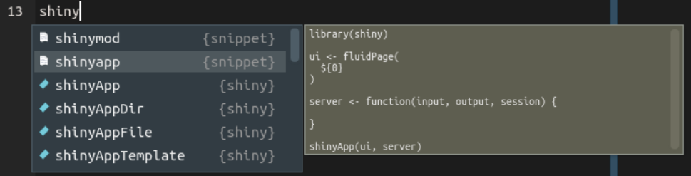
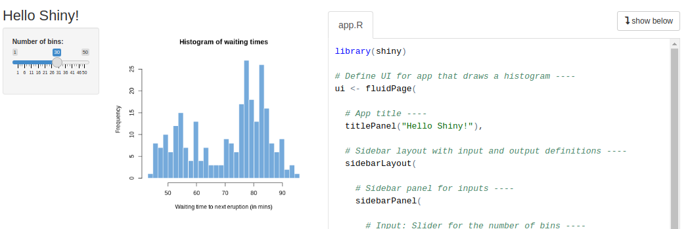
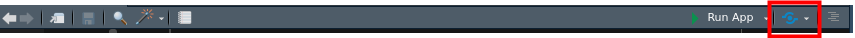

Shiny Apps
13 minute read
What is Shiny?
Shiny is an R-based environment for building interactive web applications for
data analysis and exploration (“Shiny - Tutorial,” n.d.). One can create a beautiful
web app in Shiny with only knowledge of basic R.
Shiny apps can be deployed on local computers or web servers including custom and cloud-based servers (e.g.
AWS, GCP, shinyapp.io service). The basic structure of a Shiny app is an
app.R script containing the user interface (UI) and server components:
- UI
ui <- fluidPage()
- Server as a function
server <- function(input, output, session) {}
- Statement to define the whole shiny app
shinyApp(ui = ui, server = server)
Get started
The following introduces the basic development routines for Shiny apps using RStudio. Most other
R IDEs can be used here as well. For beginners the interactive test and debugging functionalities of
RStudio simplify the development process of Shiny apps.
To start, open an Rscript in Rstudio and load the shiny library
library(shiny)
When typing shiny in the code editor, the code/function suggestion dialog allows to select the corresponding code snippet.
If the dialog does not show up automatically, one can press Ctrl + space to open it (on Mac use command instead of Ctrl).

After selecting shinyapp in the dialog, the following code snippet will be inserted in the code editor.
library(shiny)
ui <- fluidPage(
)
server <- function(input, output, session) {
}
shinyApp(ui, server)
This is the basic structure of a Shiny app. Now, save it (Ctrl/Cmd + s) to your current working
directory and name it “app.R.” You should see the script file has been recognized as a Shiny app file
and it is runnable with a green Run App button on the top-right corner of the
script file.

If you run current app, it should open up a tab in the browser or open the Viewer in Rstudio
of the app. You can change where to open it with the down-arrow button next to
the Run App button. Current app will give you an empty app because we have not filled
it with any components.
Add UI
Basic layout
UI is the skeleton of the app. In Shiny, UI is usually defined by a page structure by calling
the one of the page function, like a fluidPage, fixedPage, etc. Then, you can
start to fill components within this structure. It is similar as writing HTML with
R wrappers. It will be no problem if you do not know what is HTML, remember some of
the following tags (functions) will be enough.
h1-h6: Level 1 to level 6 headings, similar as#…######in Rmarkdownp(paragraph): basic text containerfluidRow: create a row in the app (horizontal space) to hold children componentscolumn: divide a vertical space in the app. The width is 1-12. This relates to the HTML framework Bootstrap that Shiny is built on. You can divide the parent container vertically from 1-12, 1 is the minimum width and 12 is max.a: create a linkimg: add an imagecode: code blocks
Let us try to put things above to create an app:
library(shiny)
ui <- fluidPage(
h1("My biggest title"),
column(
width = 6,
h2("section 1"),
p("some text blablablablablablablablablablablablablabla"),
fluidRow(
column(
6,
h4("sub section 1"),
p("some text blablablablablablablablablablablablablabla"),
code("1 + 1 = 2; mean(1, 2, 3)")
),
column(
6,
h4("sub section 2"),
p("some text blablablablablablablablablablablablablabla"),
a(href = "https://google.com", "Link to Google")
)
)
),
column(
width = 6,
h2("section 2"),
p("some text blablablablablablablablablablablablablabla"),
p("some other text blablablablablablablablablablablablablabla"),
img(src = "https://raw.githubusercontent.com/systemPipeR/systemPipeR.github.io/main/static/images/systemPipeR.png", style = "height: 280px")
)
)
server <- function(input, output, session) {}
shinyApp(ui, server)
High-level layout functions
There are some high-level functions in Shiny to help you create these layout easily:
titlePanel,splitLayout,verticalLayout,sidebarLayout,tabsetPaneland more.- Read more on Shiny reference manual.
Sidebar layout:
ui <- fluidPage(
titlePanel("Hello Shiny!"),
sidebarLayout(
sidebarPanel(
h3("Side bar content"),
p("..."),
p("..."),
p("..."),
p("...")
),
mainPanel(
h3("Main panel content"),
p("..."),
p("..."),
p("..."),
p("...")
)
)
)
server <- function(input, output, session) {}
shinyApp(ui, server)
Tabset layout:
ui <- fluidPage(
tabsetPanel(
tabPanel("panel1", p("Panel 1 content")),
tabPanel("panel2", p("Panel 2 content")),
tabPanel("panel3", p("Panel 3 content"))
)
)
server <- function(input, output, session) {}
shinyApp(ui, server)
Interactive components
The most important part that makes a Shiny app different from a static website is the interactivity. User interactions are achieved with interactive components (widgets) on the UI side. These components inlcude but not limited to, buttons, text inputs, select inputs, check boxes, numeric inputs, dates and more. Read more of these components on Shiny website.
Here we demonstrate some of these components in addition to the sidebar layout.
ui <- fluidPage(
titlePanel("Shiny inputs"),
sidebarLayout(
sidebarPanel(
h3("Some input examples"),
actionButton(inputId = "btn", label = "A button", icon = icon("dna")),
selectInput(
inputId = "select",
label = "Select input",
choices = c("apple", "banana", "orange")
),
sliderInput(
inputId = "slider",
label = "Slider input",
min = 0, max = 100, value = 0
),
textInput(
inputId = "text",
label = "Text input",
placeholder = "Type some text"
)
),
mainPanel(
h3("Main panel content"),
p("..."),
p("..."),
p("..."),
p("...")
)
)
)
server <- function(input, output, session) {}
shinyApp(ui, server)
Server
So far we have learned how to create the Shiny UI and add some interactive components to it, but when we interact with these components, nothing will happen because we have not added any backend logic to tell the app what will happen when these components are interacted (clicked, selected, changed …). Here, the server comes in for the role. We define most interactive logic in the server (much of the logic can be done with Javascript too, but that is advanced, not be discussed here).
Server function
In Shiny, UI is defined as a list-like R object, but server is different, it is a function. From the different object type you would know UI is evaluated before app runs and done. Server is waiting to be evaluated after app run. It is subjected to accept different function inputs and to be re-evaluated many times.
Three important arguments of the server function:
input: list-like object with all user inputs from the UI (get value from UI)output: list-like object with data sending to the browser (set value to UI)session: R6-like class, containing all information of current app session (advanced use only).
Reactivity
The entire Shiny server is built on a concept called reactivity. It defines how reactive source, usually UI interaction (button clicking) to trigger some server expressions to be evaluated and finally result some updates to the reactive endpoint, usually like sending data to the UI, making a new plot.
Watch reactivity change
Reactivity objects in Shiny (change of this object will trigger shiny to do the recalculation):
input: each individual input object, likeinput$id1,input$id2,input$id3reactive: expressions defined inreactive({...})reactiveVal: a single object that will be changed at some point.reactiveValues: a list of objects that will be changed at some point.
There are a few different ways to watch for Shiny reactivity.
-
observe: this observer triggers if any reactive expression in is changedobserve({ input$btn1 input$btn2 # do some thing })Both clicking on button 1 and button 2 will trigger this expression.
-
observeEvent: this observer triggers if any reactive expression in is changedobserveEvent(eventExpr = input$btn1, { input$btn2 # do some thing })Only clicking on button 1 but not button 2 will trigger this expression.
-
reactive: all reactive expressions inside will trigger this reactive expression to be redefined. It is triggered similar toobservebut will return a value to be used in other reactive expressions.my_react <- reactive({ input$btn1 input$btn2 # do some thing # return the final value })Both clicking on button 1 and button 2 will trigger this expression.
-
All shiny render events: all reactive expressions inside shiny render events like
renderPlot,renderText, … will trigger the rendering to be recalcualted. to be used in other reactive expressions.output$myplot <- renderPlot({ input$btn1 input$btn2 plot(1, 2) })Both clicking on button 1 and button 2 will trigger this expression.
Use input to get values
Here we use the sidebarLayout example and add some server code to demo how to
get values from user interactions. Run this example and watch the output in your
R console.
library(shiny)
ui <- fluidPage(
titlePanel("Shiny inputs"),
sidebarLayout(
sidebarPanel(
h3("Some input examples"),
actionButton(inputId = "btn", label = "A button", icon = icon("dna")),
selectInput(
inputId = "select",
label = "Select input",
choices = c("apple", "banana", "orange")
),
sliderInput(
inputId = "slider",
label = "Slider input",
min = 0, max = 100, value = 0
),
textInput(
inputId = "text",
label = "Text input",
placeholder = "Type some text"
)
),
mainPanel(
h3("Main panel content")
)
)
)
server <- function(input, output, session) {
observe({
cat("*****observe*****\n")
cat("Button clicked", input$btn, "times\n")
cat("Selected value is", input$select, "\n")
cat("Slider value is", input$slider, "\n")
cat("Typed balue is", input$text, "\n")
})
# or use observeEvent, watch closely the difference of when the text will be printed on console
# observeEvent(input$select, {
# cat("*****observeEvent*****\n")
# cat("Button clicked", input$btn, "times\n")
# cat("Selected value is", input$select, "\n")
# cat("Slider value is", input$slider, "\n")
# cat("Typed balue is", input$text, "\n")
# })
}
shinyApp(ui, server)
Use output to update UI
Instead of print the text to R console, we can use output to send text to users.
Here we use output$text_out <- renderPrint({...}) on server to create the
expression. Also we need to add verbatimTextOutput(outputId = "text_out") inside
mainPanel to indicate where we want to display the text on UI.
In shiny all render functions renderXxx are coupled with a xxxOutput function
as container on UI. Read more of them on
Shiny website.
library(shiny)
ui <- fluidPage(
titlePanel("Shiny inputs"),
sidebarLayout(
sidebarPanel(
h3("Some input examples"),
actionButton(inputId = "btn", label = "A button", icon = icon("dna")),
selectInput(
inputId = "select",
label = "Select input",
choices = c("apple", "banana", "orange")
),
sliderInput(
inputId = "slider",
label = "Slider input",
min = 0, max = 100, value = 0
),
textInput(
inputId = "text",
label = "Text input",
placeholder = "Type some text"
)
),
mainPanel(
h3("Main panel content"),
verbatimTextOutput(outputId = "text_out")
)
)
)
server <- function(input, output, session) {
output$text_out <- renderPrint({
cat("*****observe*****\n")
cat("Button clicked", input$btn, "times\n")
cat("Selected value is", input$select, "\n")
cat("Slider value is", input$slider, "\n")
cat("Typed balue is", input$text, "\n")
})
}
shinyApp(ui, server)
Example 2: create an interactive plot
library(shiny)
library(ggplot2)
ui <- fluidPage(
titlePanel("Plot control"),
sidebarLayout(
sidebarPanel(
h3("Some input examples"),
selectInput(
inputId = "select_col",
label = "Choose a column",
choices = names(iris)[-length(names(iris))] # exlcude last column
),
selectInput(
inputId = "select_fill",
label = "Choose a fill color",
choices = c("white", "red", "blue", "orange", "yellow")
),
textInput(
inputId = "text",
label = "Plot title",
value = "Box plot of iris"
)
),
mainPanel(
h3("Box plot of iris"),
plotOutput("myplot")
)
)
)
server <- function(input, output, session) {
output$myplot <- renderPlot({
ggplot(iris) +
geom_boxplot(aes_string(y = input$select_col), fill = input$select_fill) +
ggtitle(paste0(input$text, "-", input$select_col))
})
}
shinyApp(ui, server)
More examples
There are many other basic examples that are provided by this package and have a taste what we can do with Shiny apps.
To list app examples
runExample()
## Valid examples are "01_hello", "02_text", "03_reactivity", "04_mpg", "05_sliders", "06_tabsets", "07_widgets", "08_html", "09_upload", "10_download", "11_timer"
Choose one of the examples you would like, e.g.
runExample("01_hello")

You can see it breaks into two section, left-side is the actual app, on the right-side is the code to build this app. When we build Shiny apps, The right-side section is usually not displayed. It is called the “showcase” mode which is good for teaching. When you interact with app, this mode will also highlight what part of the code has been re-evaluated by your interaction in order to update the UI, a powerful utility to learn how shiny backend work.
However, to have a feel what a normal app would look like, use display.mode="normal"
runExample("01_hello", display.mode="normal")
The following Shiny app is hosted on shinyapps.io and embedded into the
markdown (or html) source of this page using the following iframe syntax:
<iframe src="https://tgirke.shinyapps.io/diamonds/" style="border: none; width: 880px; height: 900px"></iframe>
Deploy
This can be done on local or cloud systems. An easy solution is to get an account on shinyapps.io and then deploy Shiny apps there. Read the tutorial on Shiny website.
Create a Shiny app for your final project
After we have familiarized with Shiny basics, we can try to create a Shiny app to to course project. Here is a template app file, source code stored in this Github repository.
This template helps readers to visualize your downstream results of workflows.
- A barplot of deferentially expressed genes (DEG) across different comparison groups from the RNAseq workflow.
- A barplot to show different gene ontology (GO) enriched results. This plot can be applied to both RNAseq and ChIPseq projects.
- Add you own additional plots.
The embedded app is below or to have a better visual, open it in a new tab with this link: https://tgirke.shinyapps.io/gen242_shiny_template/
To use this template on your own dataset:
-
click the “Use this template” on the Github page to create your own repository.
-
Clone this newly generated repository to your local computer.
-
Install all packages that are required by the template:
install.packages(c("shiny", "DT", "ggplot2", "plotly", "dplyr")) -
Do not modify anything of the template at this point. Directly open the
ui.Rfile and click theRun Appbutton to test run the app to see if you can run it with no problem. -
Read deploy to set up your account on shinyapps.io and use the credentials to set up the account in your local Rstudio.
-
Click the deploy button to deploy to your account. The prompt may ask you to fill the credential for the first time. 
-
Check all files and give your a title and publish it.
-
Once you have a successful template instance, you can start to modify to your own app.
-
Open up the
ui.Rfile, change/add your own project information, title, name, description and other text. -
Replace data sets in
/datafolder,degs.csvis for DEG plot, read “Plot caption” section on the app about the requirements of this file.go.csvis for GO enrichment plot, read “Plot caption” section on the app about the requirements of this file.- If you are doing a ChIPseq project and do not have a DEG table. Delete the DEG section in UI and server files.
-
Test to run with your new datasets locally and re-deploy your instance.
-
Add your own components, plots and others to the app if you like.
More resources to learn Shiny
Tutorial and books
- Long video tutorials.
- Shiny official Lessons.
- Shiny official gallery and source code
- Advanced Shiny book - Mastering Shiny
- Advanced web application in R book - Javascript for R
Extension packages
- Catalog of cool extension packages - Awesome Shiny
- shinyWidgets - UI components
- systemPipeShiny - A framework for workflow management and data visualization.
- spsComps - UI components, animations, server components
- shinyjs - server end JavaScript communications
Session Info
sessionInfo()
## R version 4.0.5 (2021-03-31)
## Platform: x86_64-pc-linux-gnu (64-bit)
## Running under: Debian GNU/Linux 10 (buster)
##
## Matrix products: default
## BLAS: /usr/lib/x86_64-linux-gnu/blas/libblas.so.3.8.0
## LAPACK: /usr/lib/x86_64-linux-gnu/lapack/liblapack.so.3.8.0
##
## locale:
## [1] LC_CTYPE=en_US.UTF-8 LC_NUMERIC=C LC_TIME=en_US.UTF-8
## [4] LC_COLLATE=en_US.UTF-8 LC_MONETARY=en_US.UTF-8 LC_MESSAGES=en_US.UTF-8
## [7] LC_PAPER=en_US.UTF-8 LC_NAME=C LC_ADDRESS=C
## [10] LC_TELEPHONE=C LC_MEASUREMENT=en_US.UTF-8 LC_IDENTIFICATION=C
##
## attached base packages:
## [1] stats graphics grDevices utils datasets methods base
##
## other attached packages:
## [1] fgsea_1.16.0 ggplot2_3.3.2 BiocStyle_2.18.0
##
## loaded via a namespace (and not attached):
## [1] Rcpp_1.0.5 bslib_0.2.4 compiler_4.0.5 pillar_1.4.7
## [5] BiocManager_1.30.10 jquerylib_0.1.3 tools_4.0.5 digest_0.6.27
## [9] lattice_0.20-41 jsonlite_1.7.1 evaluate_0.14 lifecycle_0.2.0
## [13] tibble_3.0.4 gtable_0.3.0 pkgconfig_2.0.3 rlang_0.4.8
## [17] Matrix_1.3-2 fastmatch_1.1-0 parallel_4.0.5 yaml_2.2.1
## [21] blogdown_1.2 xfun_0.22 gridExtra_2.3 withr_2.3.0
## [25] stringr_1.4.0 dplyr_1.0.2 knitr_1.30 generics_0.1.0
## [29] sass_0.3.1 vctrs_0.3.5 grid_4.0.5 tidyselect_1.1.0
## [33] data.table_1.13.2 glue_1.4.2 R6_2.5.0 BiocParallel_1.24.1
## [37] rmarkdown_2.7 bookdown_0.21 purrr_0.3.4 magrittr_2.0.1
## [41] codetools_0.2-18 scales_1.1.1 htmltools_0.5.1.1 ellipsis_0.3.1
## [45] colorspace_2.0-0 stringi_1.5.3 munsell_0.5.0 crayon_1.3.4